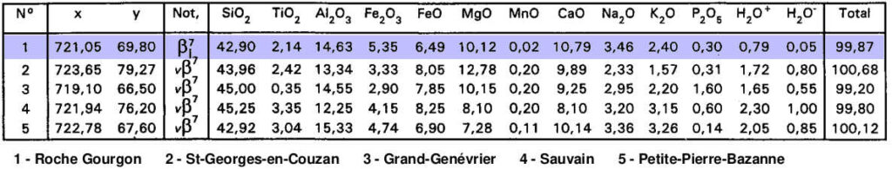
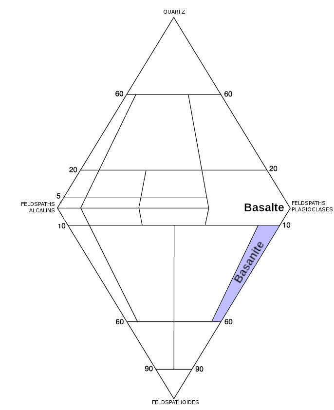
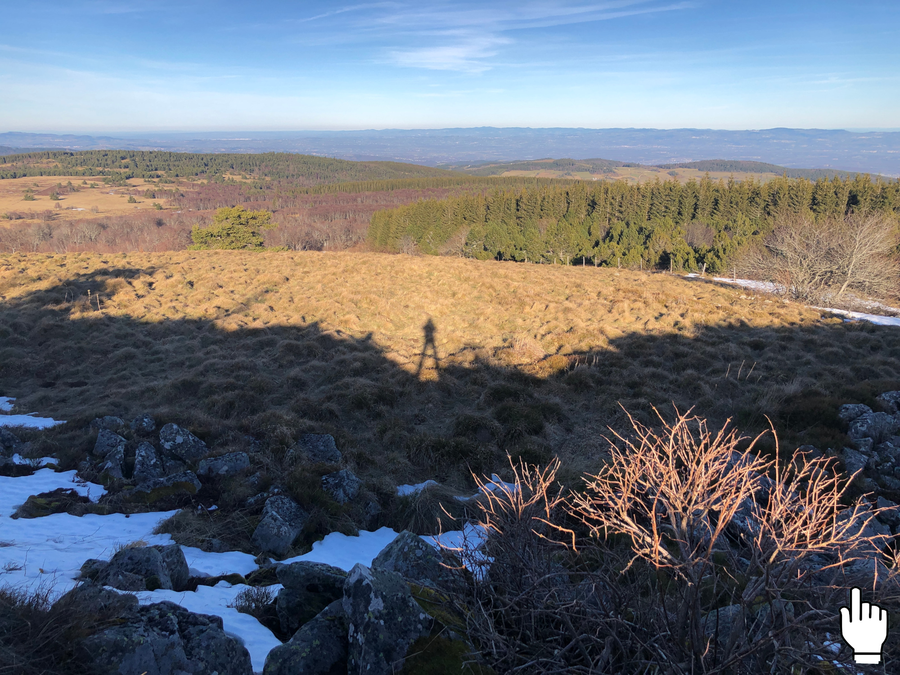

La boussole est un instrument très simple pourvu d’une aiguille aimantée, permettant de mesurer la direction d’un champ magnétique.
Le champ magnétique naturel de la Terre est produit par les mouvements de convection du Fer de son noyau externe liquide. C’est lui qui est à l’origine de l’orientation de l’aiguille d’une boussole en direction du Nord magnétique.
A proximité d’une masse de fer, le champ magnétique peut être perturbé. C’est le cas par exemple sur un bateau, où le moteur peut dévier l’aiguille du compas (nom donné à la boussole des navigateurs). Il convient alors de corriger cet effet de déviation, par des tables de correction, afin d’éviter toute erreur de cap en navigation.
Sur cette vidéo, on observe très bien le changement de direction de l’aiguille de la boussole, lorsqu’on l’approche de la roche affleurante. Il s’agit d’un dyke de roche volcanique riche en fer (une basanite), associée au volcanisme miocène des monts du Forez (département de la Loire).
Cette basanite s’est mise en place à la faveur d’un épisode volcanique au miocène (ère Cénozoïque).

La basanite de la roche Gourgon est riche en Fer (> 11%), ce qui explique son aimantation.
Source : notice de la carte géologique d’Ambert (BRGM).

La basanite, une roche magmatique proche du basalte, mais contenant des feldspathoïdes. Sur le diagramme de Streckeisen, elle se situe donc dans le triangle inférieur.
Elle fait partie des roches pauvres en silice (dites basiques), associées à un magma très fluide.


La roche Gourgon se situe entre Montbrison et Ambert, dans les monts du Forez (département de la Loire), à 1420m d’altitude.
Carte géologique interactive. Cliquez puis zoomez.
Pour en savoir plus…
…sur les roches volcaniques de la région, vous pouvez consulter la notice de la carte géologique d’Ambert.
…sur le champ magnétique terrestre, et l’aimantation thermorémanante des roches, un article très complet de Planet-Terre.